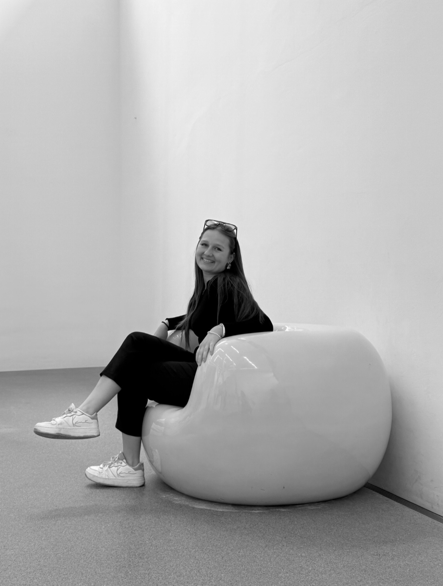

Naturraum · Rückzug
Vogelbeobachtungsstation
Ein Entwurf zwischen Landschaft, Beobachtung und stiller räumlicher Präsenz.
Eine moderne, minimalistische und gleichzeitig emotionale Architekturmarke – mit Fokus auf Atmosphäre, Klarheit und starke räumliche Wirkung.

Die bestehende Gestaltung deiner Website bleibt bewusst erhalten: weiche Rosé-Töne, viel Weißraum, ruhige Typografie und ein klarer, hochwertiger Gesamtauftritt. Inhaltlich wird sie jedoch stärker in Richtung eines internationalen Architekturportfolios geschärft – bildorientiert, reduziert und emotional.
Die Website soll nicht wie ein Studentenportfolio wirken, sondern wie das digitale Zuhause eines jungen, klar positionierten Architekturbüros – ruhig, präzise und professionell.


Ich studiere Architektur und entwickle Entwürfe mit Fokus auf Atmosphäre, räumliche Klarheit und menschliches Erleben. Mich interessieren Konzepte, die funktional präzise sind und zugleich emotional wirken – ruhig, hochwertig und mit einer klaren gestalterischen Haltung.
Die Seite verbindet dein bestehendes Farbkonzept und deine Markenästhetik mit den Qualitäten internationaler Architektur-Websites: bildstarke Projektflächen, klare Typografie, ruhige Mikroanimationen, großflächige Weißräume und eine immersive Projektpräsentation mit Modal oder eigener Projektseite.
Für Anfragen zu Projekten, Kollaborationen, Praktika oder Portfolio-Austausch kannst du mich direkt per E-Mail oder über Instagram kontaktieren.